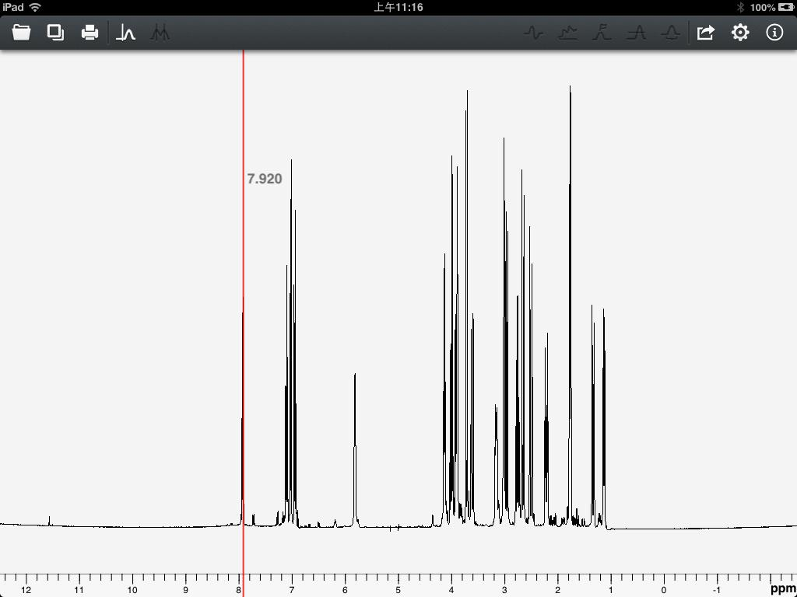
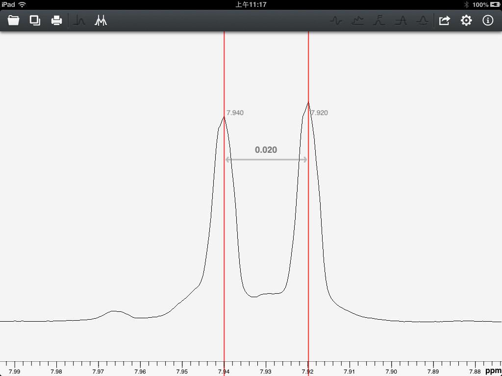
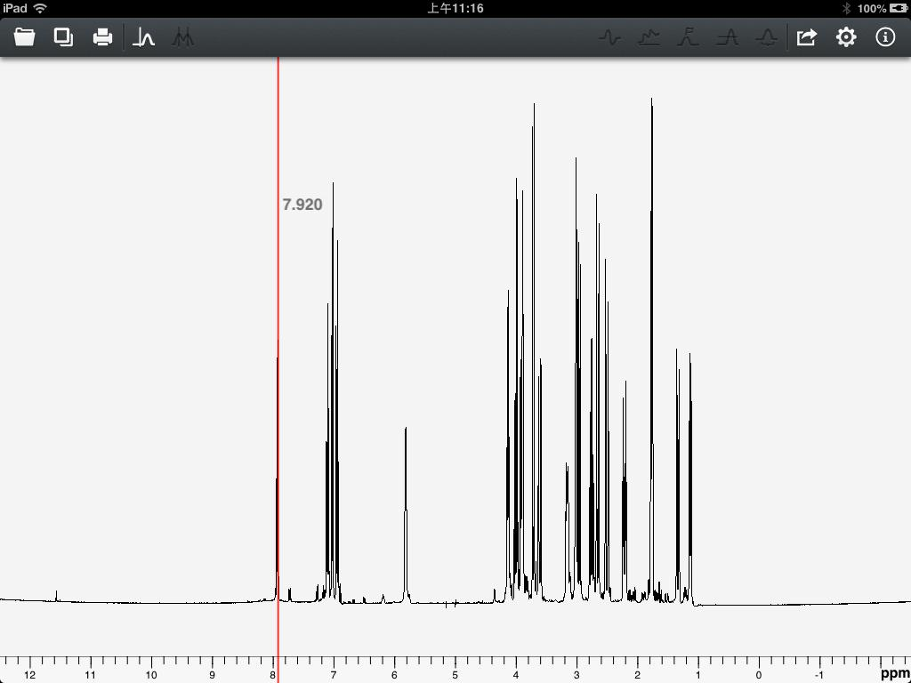
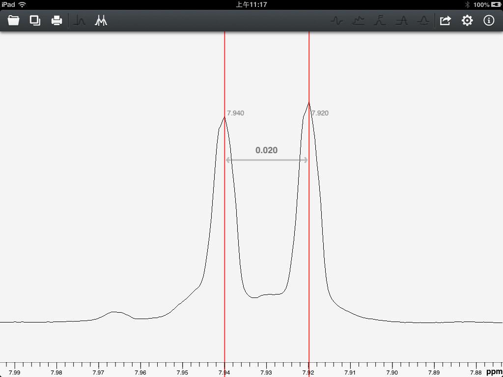

User Guide of Touch NMR
Current version offers two cursor modes. Users click the light-marking icons located on the upper left corner to transfer between two cursor modes. Single cursor mode is shown in figure 15.

Figure 15
Double cursor mode is shown in figure 16.

Figure 16
Each cursor line will display the current coordinate value. The distance between two cursors will be displayed in the middle of two cursors, which is very important to measure the J-coupling constants.

Figure 15
Double cursor mode is shown in figure 16.

Figure 16
Each cursor line will display the current coordinate value. The distance between two cursors will be displayed in the middle of two cursors, which is very important to measure the J-coupling constants.